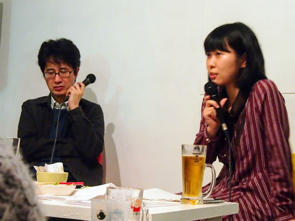

| 若手ライターはいかに生きるべきか | |
| 米光一成 & 青柳美帆子 | |
| kodomonomousoubukkusu (2017) | |
米光一成・青柳美帆子
2014年11月1日に高円寺パンディットで行われたトークイベント「若手ライターはいかに生きるべきか」（出演：米光一成・青柳美帆子）を電書にしました。

（テキスト化・撮影：与儀明子）
冒頭に、エクスキューズを３つ。
まず、これは2014年11月のイベントだということ。あの時点から状況は大きく変わっている。ここで議論したことは、根本的なことなので内容は古びてない。しかし、未来予測的に語っている部分がもう実現していたり、個々の具体例や状況については当然だが変化している。
もうひとつ。イベントなので、言いたい放題である。言い過ぎたりしているし、勢いで言っているところもある。文字化するときに保身が走って大きく削ったりマイルドにしたりしガチだが、がんばって言いたい放題のままにしておいた。言い過ぎてるところも含めて面白いからだ。とはいえ誤解されそうな部分や事実誤認については最低限の修正を加えた。
最後に。議論が大きくうねっている。ぼく自身も偏った発言をしている。が、会場でたくさんの編集者やライターが発言して多角的な意見が交わされた結果、全体として立ち上がっている内容は間違っていないものになったと思う。この議論について異論や反論は嬉しいが、多くの声が編み出しているものについて考えてもらえると、今後も有意義な議論になると思う。
というわけで、前置きが長くなってしまった。
米光一成×青柳美帆子「若手ライターはいかに生きるべきか」お楽しみください。（米光一成）
2014年、24歳で、完全に迷子になっているライターが、いろんな人に話を聞いてもらっている場を、2016年のこのタイミングでテキスト化してもらいました。
「そんなことで悩んでたの？」と言いたいこともあり、「今もまだそれで悩んでいるよ」というところもあり、「お前は本当に変わらないな」と呆れるところもあり、「ちょっとはマシになれてるからそんな悲観的になるなよ」と励ましたくなるところもあり。
2016年の青柳美帆子がどうなっているかはひとまず置いておいて、2014年当時のライター業界の話をお楽しみいただければ幸いです。（青柳美帆子）
米光 みなさんこんばんは。米光一成です。雨もちょうどやんで、まだ灰色の雲天のなかに遠くの山々も美しく......。
青柳 ど、どうしたんですか？
米光 ちゃんと始めようと思って！
青柳 ああ、時候のあいさつを。
米光 今日は「若手ライターはいかに生きるべきか」にお集まりくださりありがとうございます。若手ライター代表として、青柳さんをお呼びしました。
青柳 青柳美帆子です。
米光 1990年生まれ、24歳の青柳さんと、1964年生まれ、49歳の米光さんと、みなさんで、「若手ライターはいかに生きるべきか」というテーマについて考えていこうと思っております。
青柳 よろしくお願いします。
米光 まずは、サンプルとしての若手ライター青柳美帆子はどうなのかを話し、それからもうちょっと踏み込んだ話をします。まずは、ぼくの自己紹介から。1964年、昭和39年生まれです。東京オリンピックの年ですよ。『平凡パンチ』創刊。これ以前は日本にグラビアがなかったの。
青柳 ああ、男子よかったですねー。
米光 と、と同時に『ガロ』も創刊。
青柳 サブカルも救われた！
米光 対照的な二誌が生まれた面白い年ですな。本職はゲームデザイナーです。『魔導物語』『ぷよぷよ』『BAROQUE』などを作りました。ライター業もやっていて『仕事を100倍楽しくするプロジェクト攻略本』『自分だけにしか思いつかないアイデアを見つける方法―"企画の魔眼"を手に入れよう』とか、本をいろいろ出しています。麻野一哉さん、飯田和敏くんとの共著に『ベストセラー本ゲーム化会議』 『日本文学ふいんき語り』『恋愛小説ふいんき語り』 とか。
青柳 『恋愛小説ふいんき語り』は、米光さんが恋愛をぜんぜんわかってないかんじが面白いです（場内笑）。
米光 そうなの？ 他の二人が恋愛をわかってなくて、おれだけがわかっているというイメージが、おれのなかには......。
青柳 ......（にっこり微笑む）
米光 うむー。
青柳 そのわかってないものに徒手空拳で向き合ってるところが面白い本でしたね。
米光 うむー。で、最新刊は『男の鳥肌名言集』。熱い本です。イメージチェンジしようと思って、男いかに生くるべきかという名言を集めました。
青柳 まさか米光さんがこれを出すとは。
米光 最近は、Kindleで『思考ツールとしてのタロット』というタロットの本を出してます。現在連載してるのが、「ミステリマガジン」「早稲田文学」「フリースタイル」「ケトル」。他には、NHKラジオの「すっぴん」という番組で新刊を紹介したり、立命館大学で教えています。宣伝会議の「編集ライター講座上級コース」、通称米光講座というのをやっていて、青柳さんも卒業生。
青柳 そうです。米光講座に通いました。
米光 どんな講座？
青柳 米光さんが先生で、どうしたら原稿が書けるのか、みんなでうんうん考えて実践する講座、でしょうか。
米光 そうね、実践の場だよね。というわけで、いちおう立ち位置的には、若手ライターではなくベテラン......（口にして照れる）、おれベテランって言っていいのかなあ。
青柳 ベテランですよ！
米光 はい。ベテランライターの立ち位置で進行していきます。で、一方の青柳さん。ライターを初めて2年半です。自己紹介をどうぞ。
青柳 自己紹介をさせていただきます、青柳美帆子です。ライターです。私の得意分野は4つ。
1．サブカル（アニメ、漫画、映画）
2．イベントレポ
3．女子とエロスと社会
4．少女革命ウテナ
ちょっと1が広すぎですよね。
米光 サブカルね。そもそもサブカルとは何か問題が勃発するけど、まあいまは置いとこう。
青柳 サブカルが得意なライターなんてめちゃめちゃたくさんいるじゃないですか。
米光 うん。
青柳 サブカルだけだとライターとして弱い。
米光 まあ、指し示すものが広いよね。
青柳 他に得意分野はないかなと考えたら、イベントレポかなあと。夜に取材して翌日の朝までに原稿を書いて載せてもらう。
米光 ウェブ時代のスピードでね。
青柳 それができるのが強みかなあと思っています。レポと言っても、新聞のニュースみたいに事実を列挙するやつではなくて、もう少し踏み込んだもの、ファンの人が喜びそうなものを目指しています。他に好きな分野を考えたら、3番の「女子とエロスと社会」。これもちょっと広い。
米光 うん。
青柳 男の人に消費されるエロスではなくて、自分が好きなエロスを取り上げていきたいなあと。
米光 ある種のジェンダー問題的なものに、引っかかってるってことだよね。
青柳 そうですね。ただ、ジェンダー問題に引っかかってるって言うと、すごいめんどくさそうな女の匂いがするじゃないですか。
米光 どうかなー。それも偏見じゃねえ？
青柳 私はそう感じるので、あんまりジェンダーという言葉は使いたくないんです。
米光 っていうか、めんどくさい女じゃないの？
青柳 え、ないですよね？ ないと思うんですけど......。
米光 はい。
青柳 はい。めんどくさく見えないように、「女子とエロス」「女子と社会」と書いています。で、いちばん好きなのは、4番目にあげた『少女革命ウテナ』という1997年放送のアニメ。この作品について書いているときがいちばん幸せです。
米光 青柳さんのこれまでについても振り返ってもらいましょう。
青柳 小学校時代は、『ぷよぷよ』のシェゾというキャラクターに心底狂っていました。
米光 んー（笑）。
青柳 初恋の人です。
米光 よかったねー。
青柳 はい！
米光 っていうか、シェゾが初恋の人ですっていうのがもうねじれてるよね。
青柳 え？
米光 まあいいや。
青柳 中学時代も、引き続き『ぷよぷよ』のシェゾのことを考えて生活していました。高校2年生までずっとシェゾのことを愛し続けてましたね。
米光 はい。
青柳 で、高校時代は、犬神サーカス団というビジュアル系バンドに急激にはまり、ライブに行って追っかけてというバンギャのような生活をしていました。
米光 完全にサブカルっ子だよね。
青柳 ほんと、オタク女でしたね。で、高3で『少女革命ウテナ』を知りました。大学に入学してからはワセダミステリクラブという文芸サークルに入って。これまで、私は本を読んでるほうだと思ってたんです。でも大学には......
米光 もっとたくさん読んでる人がうじゃうじゃいたと。
青柳 衝撃でしたね。ここで生きていくためにはもっと読まなきゃと、1年に300冊くらい読みました。大学の3年生の秋から半年間ライター養成講座に通い、講座が終わるころに、はじめて商業媒体に原稿が載ってライターデビューしました。2012年の4月6日、大学4年の春ですね。
米光 「ヒルナンデス！」で佐藤かよと内田理央が腹黒バトル!?」という原稿がウェブ媒体「エキレビ！」に掲載されてね。
青柳 はい。でまあ、なぜ米光講座に入ったのか。『ぷよぷよ』が好きでずっと米光さんのファンでした。ツイッターで講座を知って、米光さんに会いたーいって。行くまでは、ものを書く仕事がしたいなってただ漠然と考えてました。ワセダミステリクラブは作家や評論家、編集者がたくさんいます。なんか私も書けるんじゃないかなーってぼんやり思ってしまう場だったんですよ。でも、きっかけが分からなくて、書くチャンスのある場を探している状態でした。
米光 講座では、ゲストの「エキレビ！」編集長アライユキコさんが受講生の原稿を講評する「エキレビ！オーディション」をやっています。できる奴はそのままやりとりして掲載してもらう。
青柳 私はコミックマーケットのトイレ情報を書いて、面白いけど「エキレビ！」には載っけらんないと言われました。
米光 「エキレビ！」オーディションに出したものが一発で載った人は、いまのところ1人もいない。やりとりした上で最終的に載る人が毎シーズン1人か2人出ます。
青柳 それでニッチなネタをやめて、テレビ番組ネタにチャレンジして載りました。
米光 オーディションのときに2パターンあるのね。「文章は整っているがネタはつまんない奴」と「ネタは面白いがそれを文章にのっけきれてない奴」。どちらかというと、後者のほうがデビューしてる人が多い。で、青柳さんは後者だったの。
青柳 オーディションのときですか？
米光 そう。
青柳 でも、そのときは、「エキレビ！」のネタとしてはなしって言われました。
米光 でも、今だったら？ 今の実力で書いたら、「エキレビ！」のネタとしてありだもんね。
──（客席・アライ）オーディションのときに、読者にサービスをするということが分かっているなと思ったのを覚えています。ところどころ笑いが入るように書いている。掴むのが巧くて、達者だなと。たぶん、今の青柳さんがコミケハックということで書いたら通っていると思う。ただ、新人だったから、やっぱり、コミケのトイレネタでOKにしてはよくないんじゃないかと。
米光 どういうこと？
アライ 毎回コミケのトイレで書かれても困るな、という思いがあったんだと思います。
米光 ああ、じゃあ、一発目としてはなしってこと？
青柳 そんな狭いネタから入っても、ってことじゃないですかね。
米光 ほー。
アライ タイミングの問題もあるし、コミケの会場って状況も変わるじゃないですか。
米光 あと、炎上しそうなネタでもある。
アライ 炎上したっていいですよ。
米光 でもね、「ライターの心がくじける問題」ってあるじゃない。新人が一発目でひどい炎上すると、くじけちゃうことが多いから、編集サイドでいろいろちゃんとフォローできないとまずい。まあ、で、いろいろリテイクを経て、「エキレビ！」に「ヒルナンデス」の原稿が掲載されたと。
青柳 「エキレビ！」デビューからどんどん書きはじめたわけではないんですよね。次の2本は、出来が悪くて、ボツを出されて。
米光 書き直しても結局載せてもらえない。
青柳 そうなってくると、ネタもどんどん思いつかなくなっていき、2012年の5月17日にデザインフェスタで緊縛体験ができるというレポートを書いたっきり、悩んでしまって書けなくなりました。
米光 しばらく執筆が止まったよね。
青柳 米光講座から「エキレビ！」デビューして、一発目はOKでも、そのあと続かなくなっちゃう人っているじゃないですか。私もそれと同じパターンに陥りました。で、2012年の8月に、「anan」のセックス特集を読んだらめっちゃ面白くて。欲望のままに書いたら一発OKで掲載。あ、これだーって思いました。「明るいエロス」という自分の方向性が見つかった。
米光 うんうん。
青柳 で、しばらくエロいものを書いてたのですが、それだけだと行き詰まるな、という感覚がありました。他に得意分野ないかなあと考えていたら、2012年の12月に、『少女革命ウテナ』のイベントレポートを書く機会に恵まれたんですね（川上とも子は誰よりも少女革命ウテナだ。今も輝いている「少女革命ウテナ テアトルAN上映会カシラ」レポ）。取材のときにはすごく楽しくてすごく幸せで、掲載されたらめちゃめちゃ評判がよくて、あーこういうのってありじゃないかなーって。紙媒体の雑誌よりも早く出せるし、ニュースサイトとは違う切り口で書けばファンに喜んでもらえる。ツイッターでレポートをあげている人がいますけど、それって正確さに欠けることが多いので。レポート記事なら参照性という価値もある。
米光 媒体特性もあるよね。他のニュースサイトだと「誰それがこう言って会場を沸かせた」みたいな、ファンじゃなくても書ける紋切り型のものが多い。というか、紋切り型だからこそのスピードで５分後には記事がアップされる。「エキレビ！」は早くても翌日掲載で、背景をちゃんと知っている人がそのあたりも含めて書いている。だから、ウテナファンが「この人分かってる！」とツイートしてくれるような原稿になったわけですな。
青柳 それはすごく嬉しいし、そっちの方向に行けば私自身が楽しい。イベントレポ行けるって思いました。
米光 2つ目の武器を発見して、ライターとしてさらに大活躍と思いきや、ね。
青柳 2013年3月に大学を卒業して、4月から高校で非常勤の古典教師になったんです。2013年はそれでいっぱいいっぱいの状態でした。生徒にもいじめられて、私、先生向いてないんじゃないかなって思い詰めてましたね。
米光 なんか暗い顔してたもんね。
青柳 1年で辞めました。いまは大学院生として江戸時代の文学を研究しながらライターをしています。2013年にぜんぜん書けなかった分、今年は書くぞーと頑張っていたら、今年の6月に体調を崩してまったく書けなくなりました。いろいろ助けてもらって、復活して、いまは、めちゃくちゃがんばるぞー！ という状態です。自己紹介は以上なんですけど......突っ込みどころありますかね。
米光 まー、なくはないが、あとで突っ込みますわ。
青柳 事前に取ったアンケートで、ライターのいいところってなんですかという質問がありましたので、私が思うライターのいいところを3つ挙げます。
1．自分が興味のあるものを少しでも話題にすることができる
2．イベントのトークなど、残りにくいものを残すことができる
3．褒められると嬉しい（小並感）
どんなにいいものを作っても、話題にならないことってあるじゃないですか。
米光 そうね。
青柳 記事にすることで、たくさんの人に知ってもらえたらいいなと。
米光 ネットの記事は、読者のリアクションが目に見えるから手応えあるよね。
青柳 数字や反応が見えやすいですよね。「買いました」「こんなこと言ってたんだ」「私も調べてみよう」みたいな反応を見ると、この仕事はすごく価値のあることだなって思います。
米光 ウェブ楽しいよねー。
青柳 イベントは一回性のもので、記録されなければどんどん消えてしまう。一回性を前提として濃い話をすることもあるとは思うのですが、特にクリエイターの話は、この場だけで共有して終わるのはもったいないな、ファンの人に届けたいなって思うんです。インタビュー本で庵野秀明がこう発言している、とか、Wikipediaに載ったりするじゃないですか。ああいうふうに、後から参照できるように残すのは大事なことだなあと。サポートじゃないですけど、自分が残したものを誰かが読むことで、よりその作品を好きになる人や、新しくはまってくれる人がいたらうれしい。あとはまあ、バカかってかんじなんですけど、ネットは褒めがダイレクトに見えますからね。褒められるとうれしい！
米光 こないだも青柳さんの福士蒼汰の胸についての原稿（「水曜ドラマ「きょうは会社休みます。」福士蒼汰の胸キュンポイント・ゲンナリポイントをチェック」）を読んだ女子高生が反応してたじゃない？
青柳 「でも福士蒼汰の乳首があまりにも綺麗なのですべて許せてしまった」って書いたら、ツイッターで「やっぱりそこを見るよねー」「ほんと綺麗だよね」って話題になってて嬉しかったです。
米光 よかったねえ。
青柳 本当に綺麗なんですよ！
米光 はいはい（笑）。
青柳 いいことばっかりではもちろんなくて、こわいところもあります。私がこわいな、と思っているのは、
1．収入
2．体調
3．社会から（そして親......）の視線
第一は収入。結局いくら年収稼げんの？ という悩みがあります。第二は収入とも関わってくるのですが、体調を崩したときに大変という問題。第三に社会からの視線。私の親は学校の先生という安定した仕事をしているので、就職していないというだけで、なにやってんの？ って言われます。「楽しければいいけど、あんまり遊ばずに社会に出てね」と遊んでる扱いをされている。
米光 うわー、その「楽しければいいけど」っていうエクスキューズがこわいね。
青柳 先生向いてないし学校つらいんだよって言っても、「その学校がダメだっただけでしょう、他の学校でやりなさい」と言われる。そこから逃げているのが現状です。あと、頭のいい高校に通っていたので、友達がどんどん銀行とかテレビ局、商社とかの大手企業に入っていくんですよ。会ったときに「青柳いまなにやってんの？」「ライターやってるよ」「そうなんだ、なんか、ブログ？」みたいな。
米光 はいはいはい（笑）。ブログと思われる問題はあるね。
青柳 それから、ネット媒体の編集やってる人に「あー、ライターやってるんだ？ 先輩がライターから記事上がってこないってよく愚痴ってるけど、え、こんなん私すぐ書けるのにって思ったりするよー」って言われて。それを私に言うのはどういうことなのかな？ みたいな。
米光 殺してくださいっていう合図だと思います（場内笑）。
青柳 そういうことを、けっこうみんな平気で言うんですよね。たとえば集英社に入って記事をいろいろ書いてるんだって言えば「へー集英社なんだすごーい」って反応するような子が、フリーでライターやってるんだって言うと「あーブログね」ってなる問題。
米光 あるね。
青柳 それが、つらいってわけじゃないですけど、面倒くさいし、嫌ですね。
青柳 この3ヶ月の収入をざっくりとまとめてみました。
8月...3万
9月...18万
10月...30万
米光 このイベントで唯一失敗したなーと思ったのは開催のタイミングね。企画立てたのが、8月末で、9月頭に青柳さんに出ない？ って相談した。で、いろいろな都合で11月1日になったんだよね。おれとしては、8月3万円という時期の、思い悩んでいた青柳さんが座ってるっていうイメージだったの。
青柳 そのころ私、死にそうな顔をしてましたよね。
米光 内輪褒めでもなんでもなく、青柳さんは才能あると思うからさ。そ青柳さんの才能を知らしめようと思ったわけですよ。おれが主催したイベントで若いライターがひとり復活するいう美しい図の予定だったのに、おまえ、10月30万稼いでんじゃん（場内笑）。これどういうことよ？
青柳 いや、これはいろいろあって。8月3万が、あまりにもやばかったんですよ。10月に大学院の後期の学費も、降り込まなくちゃいけなかったんですね。3万しか稼いでないし、貯金もない。大学院を辞める可能性も頭をよぎって。
米光 8月のときにね。
青柳 はい。でも、ライターやってる方ならわかると思うんですけど、絶対行ったほうがいい飲み会ってあるじゃないですか。なのにお金がない。同人誌を20冊売ってお金を得て、それが一晩の飲み会でなくなったりすると、あーもうこの世は地獄だーという気持ちになりました。まあ飲み会に行かなきゃいいじゃんって言われちゃうかもしれないですけど。そもそも、東京の西のほうに住んでるので、でかけるだけでお金がかかります。取材に行っても、大学院に行っても現金が減る。人に呼ばれても現金が減る。もう無理だと思って。
米光 じゃあ、10月に30万の収入を得ているのは、がんばったってことなの？
青柳 6月に体調を崩して、そのせいで8月の収入が3万だったんですね。それでやばいと思って、大学院の夏休み期間ということもあり、8月に原稿をたくさん書いたら18万になりました。でも、学費は30万。まだ足りない。焦っていたら、たまたま9月は書き仕事以外に突発で、セリフを考えるシナリオライター的な仕事が来たんです。
米光 臨時収入があったと。
青柳 それで、10月だけ跳ね上がりました。でも、このイベントの話をもらったときに考えたんです。ライターはがんばっても18万で、臨時収入があってやっと30万です、っていうのは夢も希望もなさすぎる。もっとがんばろうと10月もたくさん書きました。臨時収入なしで、来月振り込まれるのは28万です。
米光 いいじゃん。28万なら、24歳の正社員より収入多いですよ。まあ、ボーナス換算とか保険とかいろいろあるから単純には計算できないけどさ。稼いでるじゃん。
青柳 でも、いつ体調がまた悪化するかわかんない。そのときにフォローできるぐらい収入を維持できるかわからない。ほんとにこわい。
米光 まあね。
青柳 しかも失業保険がない。こわい。お金ない。こわい。
──（客席・男性）ライターで食べていくための年収はいくらぐらいからを想定してるんですか？
青柳 まず20万超えは目指せって、前に大先輩のライターさんから言われました。20万超えてからライターを職業として考えろ、それ以下は副業だ、というニュアンスでしたね。それは今月ようやく超えました。月収20万は、がんばれば超えられる。それは大卒の初任給と同じくらいだから、ものすごく低いわけじゃない。いま実家暮らしだから助かっているところもある。でも、そのあとのことを考えたときに、どこまで行けばやっていける金額なのか、ちょっとまだわからないです。どうなんですか、米光さん。
米光 うーん、ほんと人それぞれだよね。実家にいるいないでぜんぜん違うだろうし。
青柳 次のステップとして、年収600万を目指したいんです。10年くらい前に豊﨑由美さんが、「年収600 万円のライター養成講座」をやってらっしゃったんですよね。それを見て600万円は目指せるんだな、でもどうやったら目指せるんだろうと思っているところです。仕事の単価を上げるにはウェブ媒体だと限界がある。まあ、ウェブでも高いところは高いですけどね。1本3万の原稿もあるんですよね。
米光 あるよ。5万とかもあるよ。
青柳 そういう単価の高い仕事って、そんなに転がっているわけではない。少なくとも私のまわりではない。
米光 おれのまわりにもそんなに転がってるわけじゃないよ。えーっと、まわりに転がってる人？（誰も手が挙がらず）。あー聞くんじゃなかった（笑）。
青柳 やっぱりウェブだと、ある程度の限界が見えるので。
米光 いまはね。
青柳 だったら紙の仕事なのかな？ と。一般的には、ネットより紙のほうが単価は高い。
米光 そっかあ？ 『ユリイカ』の原稿料はいくらかなー？
──（客席・男性）また極端な例を......。
米光 『ユリイカ』は悪くないですよ。原稿料を提示してくれて、書きたいなら書くってことだから。ていねいな仕事をしてるしね。それより、いま原稿料未払い問題で話題の『創』のほうが（場内笑）。や、いま、特殊な例ばかりあげちゃったけど、紙だからいいというのは単純すぎると思う。
青柳 そうなんですよね。
米光 紙でも安くなってるとこもすごくたくさんある。というか、ライターがライター業界を語るときの罠があると思うのね。ジャンルによってもぜんぜん違うし、出版社によってもローカルルールがたくさんある世界なのに、自分の見えている場所のことをライター業界全体だと思ってしまう。紙だからいいとか、ネットだからダメとか分類が雑すぎる。もちろん高いところはね、雑誌によっては一記事半ページ5万円とかぜんぜんある。
青柳 半ページ5万円!?
米光 あるある。コンビニに置いてある週刊誌とか、全部とは言わないけど。原稿料がいいところもあるし、かと思えば、『創』みたいに出ないところもあるし。
米光 紙の仕事ももちろんしたらいいよと思うが、まあでも依頼が来ないってことだよね？
青柳 そうなんですよねー。
米光 こないだ、やったとか言ってたじゃん。
青柳 紙の仕事がもらえないですって話を飲み会でしていたら、先輩ライターの田島太陽さんが「じゃあ手伝う？」と仕事をくれました。他にも、友達の友達に『ユリイカ』の編集さんがいて、この間、仕事をもらいました。それから、編集プロダクションから、アニメのムックをいっしょに作りませんかという依頼をいただいて引き受けたのですが、もらえるギャラはウェブとあまり変わらなかった。私、そのときは紙の仕事がもっと高いと思っていたから、単価をもっとあげなきゃダメでしょって気持ちでいたんですけど。
米光 単価を上げるのはね、ジャンルを変えるのも手だと思う。昔がよかったって言う人いるけど、サブカル系ジャンルは昔もそんなに高くなかったでしょう。それこそ、豊﨑由美さんは最初のころ、無記名でエロ雑誌に書いていたのね。昔のエロ雑誌はサブカルネタが多かったから、そういうのを書いたり、エロいのも書いて、1冊まるまる書いて3万円だって。ピンキリいろいろある。
──（客席・ライター小野）今日来ているのは、やはりライターが多いんでしょうか？
米光 聞いてみようか。若手ライターだという人は手を挙げてみて？ 30人中10人くらい。若手じゃないライターだと思う人は？ 7人ぐらい。
──（客席・小野）結婚してる人を聞いてください。
米光 要望があったので聞きますが、結婚している人は？ んー、半分弱くらい。なんでそれ聞きたかったの？
──（客席・小野）ライターをしてますが、収入も体調も結婚してからかなり改善されたので。
米光 共働きで支えあってるってこと？
──（客席・小野）そう。あと、体調だけじゃなくて、心の調子ってあるじゃないですか。心の調子の上がり下がりもフラットになってよかったです。
青柳 このイベントをやる前に、知り合いにも言われましたね。「えー女性の若手ライターが生き残っていく方法なんてひとつしかないじゃーん。結婚すればいいじゃん（笑）」って。すごいことを言うなあ......って思ったんですけど。
──（客席・小野）男もそうです。
青柳 女性だけじゃなく、男性も安定するってことですね。若手ライターがどうやって生き残っていけばいいのか。結婚だ。一気に答えが出てしまった（笑）。
米光 じゃあお開きだ。みんな結婚しろ。っていやいや、結婚じゃなくてもさー。
──（客席・小野）うちの奥さんは、子供ほしかったけど、年齢的にできなかったんですよ。女性の場合は特に、若いうちじゃないと子供を作りにくいので、そこは考えたほうがいいと思うんですよね。
青柳 それはライターに限らず、ですよね。
米光 そうそう、だから、若手ライターはどう生きるべきか、というイベントなのだが、若手ライターに特化した問題じゃないことも多いよね。収入、体調って、別にライターじゃなくても悩むもんね。
青柳 だから、正社員になるかならないかの話になっちゃいますよね。
米光 そこになるんだあ。
青柳 フリーか正社員かと考えたときに、体を壊して倒れても収入が安定しているかしないかって大きいですよ。
米光 どう展開しようかな。つまり、ライターかライターでないかではなく、フリーか正社員かで悩んでるってことだよね。正社員の方、どのくらいいますか？ 挙手お願いします。
青柳 6人くらい。
米光 フリーの方は？ 10人ぐらい。フリーと正社員以外、何があるんだっけ？
青柳 契約社員やアルバイトですね。
米光 そういう人は？ 10人ぐらい。手を挙げてない人は何者なのだ？
──（客席・女性）無職なう。
米光 無職っていうのもあるのか。
青柳 休職中ってこともありますよね。
米光 正社員は、やっぱり体調を崩してもだいじょうぶなの？
青柳 風邪なら1日2日だからなんとかなる。でも、たとえば骨折や入院になったら、一週間単位でなにもできなくなるし、その間に予定していた仕事もぜんぶ飛ぶわけじゃないですか。こわいですよ。しかも収入が減るのはその月じゃなくて2ヶ月後です。
米光 原稿を書いてから原稿料が振り込まれるまでに、そのくらいのタイムラグがあるからね。
青柳 まず、病気になった月に医療費がかかる。で、具合が悪いからふだんより低空飛行で仕事をしていて、その次の月に収入が少なくて追い詰められる。ほんとにこわい。
米光 巨大な組織のなかにいると困った人を支えるみたいなセーフティネットがあるが、フリーだとそこに所属できない。なにか起こったときに困るのではないかと思ってるわけだよね。
青柳 そうです。フリーで体調崩して一ヶ月ぜんぜん仕事できなかったって方いらっしゃいますか？
──（客席・男性）家のお宝を売ってしのぎました。
青柳 私も同人誌売って食いつなぎました。気持ちがめげていきません？ 自分がすごいつまんない人間になった気がするんですよね。
米光 おれね、この3つは若いときから貯めなきゃいけないという話をよくしているのね。ひとつはお金ね。だって30万あれば貯金できるじゃん。お金を貯めて、あと、自分の才能を貯める。もういっこ、仲間を貯める。この3つを貯めていれば、怪我して収入がとだえてもだいじょうぶ。正社員になれば安心な時代でもないよね。こないだフェイスブックで、知らないライターの書き込みを見てびっくりしたんだけど。
青柳 はい。
米光 ライターは金をもらえるものだと思ってるほうがおかしい、みたいなさ。おれはもう志を持って餓死していくんだと。いつの時代の人だよっていう書き込みをフェイスブックで見るのは、驚きだったな。
青柳 ウケますね。それ「いいね」押しました？
米光 関わらないで見てました（笑）。それは極論だけど、でも、グラデーションで見たときに、ウテナの取材に行けて楽しい、みたいなのも含めると、「ライターは金だけじゃない感」ってあると思うのね。
青柳 そうなんですけど、ウテナのイベントレポに関しても、あれはちゃんとお金をもらって書かないとダメだなっていう意識があります。個人的に行ったらあんなレポートは書けないです。もうずっとイクニ（監督の幾原邦彦の愛称）がどんな行動をしたかに終始して、このときウィンクした、とか書いてしまう。
米光 いわゆるブログになってしまう。ブログをバカにしてるわけじゃないが。
青柳 そうですね。ファンが書いたブログのノリになってしまう。
米持 もちろん、金が動くことを否定はしないのだが、金のみ、みたいになるのもなあ。ライターという職業を、金銭だけを基準にして語られるのは違うと思うのね。
青柳 今はお金に困っているので素直に頷ききれませんが......。
米光 もちろんお金も大切だと思います。
青柳 そうですね。
米光 小野さんに聞きたいんだけど、もともと社員だったのをやめてフリーライターになったんですよね。そこの差ってどうですか？
──（客席・小野）いやーもうねー、フリーになって最高でしたね。霧がぱーっと晴れたかんじ。社員のままでいたら心を壊してました。
米光 おれもそう。ゲーム会社で企画主任になり、役員になり、と出世して、だけど辞めてフリーになった。おれのなかでは、フリーだやったー！ っていう上がりの感覚です。
青柳 いやー、でも、前に米光さんからその話を聞いたときも言ったんですけど、それはクリエイターだからでは？
米光 ライターはクリエイターじゃないの？
青柳 うーん、微妙なラインですよね。
──（客席・小野）え、ライターはクリエイターじゃないの？
青柳 ライターはクリエイターなんですか!? 客席のなかで、ライターはクリエイターだと思う人いますか？ けっこう手が挙がっている。
米光 え、なんでクリエイターじゃないと思うの？
青柳 どちらかというと職人だと思う。
米光 おれは職人もクリエイターだと思っちゃうからなあ。
青柳 クリエイターは自分が作りたいものを作っている人で、ライターは人に求められてるものを作っている人、というイメージです。
──（客席・小野）米光さんは、ゲームクリエイターのときに、自分の好きなものを作ってました？
米光 んー。あー。そこはもちろん、戦ってたところはあるわけですよ。社員なので。だってさ、企画会議で作りたいゲームをプレゼンしたら、「競馬できる？」ってスポンサーに聞かれるのよ。いや競馬しないですって言ってんのに、ダービースタリオンがヒットしてるからって「ダビスタみたいなの作ってよ」みたいな。100%おれが作りたいものを作れるわけじゃなく、いろいろ言われて、接点を見つけてやっているわけだからね。逆に言うと、作りたいものを作る人はおれのなかではアーティスト。クリエイターは、作りたくないものを作っているわけではないが、要請もふくめて作っている。
青柳 まあそうなんですけど、イベントレポのときに、私が書きたいものを書いているというよりは、読んだ人が喜ぶものを書きたいって思うんです。だから私が萌えなくても、これは読者の心が動くなって出来事があったら、そっちを書くのを優先することはあります。
米光 うん、ある。
青柳 あと、媒体で求められる文体ってあるじゃないですか。「エキレビ！」はライターに自由に書かせるけれど、ニュースサイトだと、出だしがこうなって、ここに画像が来て、こういうキャプションが来て、というのが決まっている。
米光 フォーマットが決まっている。
青柳 私がいいと思っていることでも、求められているフォーマットから外れてノイズになってしまう場合はカットする。それは、クリエイターというよりも、工業的な、機械を組み立てているような感覚なんです。
米光 うーん。
──（客席・女性）ライターという言葉が持つイメージが広すぎるのではないでしょうか。企画も自分で考えて書く人は、0から1を生み出すクリエイターだと思います。市場価値があるし、そんなに数も多くない。単に書くだけの人には市場価値はない。文章なんてものは、基本、誰でも書けるじゃないですか。
青柳 と、あなたは思っているんですね？
──（客席・女性）機械的にテキストを量産している人は、企画を出せる人とは、市場価値がぜんぜん違う、というお話です。
米光 ライターっていろいろいるよねってことだよね？ 書きたいものしか書かず、それで食べていけなくてもいいんだって人もいるわけでしょ。で、媒体の要請に合わせてそこに書くのが好きで、そっちを選んでる人もいる。ライターのなかでも、クリエイター的なやりかたもあるし、職人的なやりかたもある。
──（客席・男性）私はライターで、広告の仕事にも興味を持って、講座を受けたことがあります。広告の仕事は利害関係者が多く、やりたいことはなかなかできないが、それでも自分の出したいものを出さないとアウトだと教わりました。針の穴を3回通す覚悟で、自分のやりたいことを最後まで守りぬけと言われて、まあ無理だと諦めました。それと比べると、ライターは自分を出しやすい。
米光 そうね。広告だと、これを伝えたいという自分の内側のものと広告とが一致するのはなかなかむずかしい。けど、ギャラはいい。その真逆には、書きたいものを書くのだ、需要があろうがあるまいがいいのだ、霞を食って生きていくのだ、という人もいる。そのグラデーションのなかで、青柳は、広告的な方向のイメージを持っているってことだよね。
青柳 そっちだと思っています。自分ができているかどうかは別として。
──（小野）ライターになったときに先輩から言われたことでいまでも覚えてるのは、「フリーのいいところはクライアントを選べるところ。好きな仕事と甲斐のある仕事をそれぞれ切り分けて、自分で管理すればいい」という話。「若いころはなかなか選択肢が広がらないけど、能力が上がっていくと、選択肢が広がっていくんだ」と言われました。
米光 そうだよね。
青柳 それを言うと、仕事を選べる米光さんと選べない私は、立場が違いますよね。
米光 おれ、仕事選んでないよー。
青柳 米光さんすごいっすねー。
米光 新人のころは断ってた。週刊誌で〆切３日前に書評を書いてくれという依頼が来て、３日では書けませんって断ったの。まだ働いてたし、そのころ、推敲は書き終わったら一晩寝かせてからするというルールを厳守してたからね。で、その断った枠に誰が書いてるんだろうと気になって見たら、永江朗さんだった！ しかもすばらしい出来でさー。永江さんみたいな大ベテランの方が断らずにやってるのに、おれなんかが断ってたら、やっていけなくなると思った。それから反省して断らないことにした。書くスピードも上がったしね。たまにギャラなしで書いてって依頼が来ることがあって。
青柳 それ、依頼じゃなくてお願いですよね。
米光 そうだねー。それも基本断らない。
青柳 へー！
米光 あ、でも、どうしてぼくに依頼するのかとか聞いたり、その内容だとギャラはもらえるとうれしいですって返事はする。無理難題に対して交渉はする。で、そう返事するとそういうところはそれ以降連絡は来なくなるの。言うことは言うが、でも、仕事選んでない。
青柳 そうですね。
米光 まあ、長く仕事をしていると、この人はこういうものを書くというサンプルがたくさんできる。こっちを分かった上で頼んでくれてるケースが増えるから、断る必要があまりないのかも。
青柳 あと、こういうことを言うと米光さんは嫌がるかもしれないんですけど、米光さんはやっぱり『ぷよぷよ』を作った人なわけですよ。
米光 はいはい。
青柳 依頼するほうも「『ぷよぷよ』を作った米光さん」だからこそ頼んでいる。米光さんの文体ってライターとしてはけっこう面白いですよね。そういうものが許されるというか、それを求められている。
米光 それもねー、よく言われるのだが、いまおれに依頼してくる編集者の半分は、おれが『ぷよぷよ』を作った人だって知らない。
青柳 え、ほんとですか？
米光 ほんとに。昔の栄光はそんなにもたないのだなー（笑）。最初のころはあったかもしれないけど、いまや、昔書いた原稿が面白かったから頼むっていう人のほうが多いです。
青柳 『ぷよぷよ』って、国家レベルで振興してるものだと......。
米光 『ぷよぷよ』を知ってる人はいても、おれが『ぷよぷよ』を作った人だとは知られてない。
青柳 ぷよぷよ＝米光＝すごいっていうのが、世の中の人全員が持っている共通認識だと思ってました。
米光 ないないなーい。大学で教えてて学生も知らないから。
青柳 まじかー！
米光 なので、ぷよぷよ作ってるから仕事来てるんだろーっていうのは、
青柳 誤解だったんですね。
米光 ......もしかしたら、ちょっとはあるかも。でも、そこは逆にライターのいいところで、いままでやってきたことの評価が積み重なるんだよ。『ぷよぷよ』作ったのだって知ってる人は評価してくれる。大学教授という肩書きのおかげで、教養について語ってほしいという仕事が来たりする。
青柳 うんうん。
米光 ライターは、自分が書いてきたもの、やってきたことが積み重なって評価になる。あの人はこの人と会わせると化学反応が起こるんじゃないかって、他の人が考えて話を持ちかけてきてくれたりする。歌人の枡野浩一さんが「次の原稿依頼が来ない原稿は失敗」と言っています。ちょっと厳しい言葉だけど。
青柳 厳しいですねー。
米光 だから俺はこの話を紹介するときは、そのあとに「3割バッターでいいけどね」って言ってる。何本か書くうちに編集から声がかかるといいよね。この人面白いから原稿依頼してみようって思われるような原稿を書けるかどうかって、ライターの資質として大きい。
青柳 ネットの記事だとその効果が少ないと思います。知り合いの紙媒体の編集が、ライターに何か仕事を頼むときに、その人がどんな本を出しているか、どんな雑誌に載っているか、紙ベースでしか見ないと言っていました。ひとつでも紙の仕事をしたことがあると強い。
米光 ネットと紙って書き方が違うからかな。
青柳 まあ、ちゃんと書けるかどうかの保険ですよね。
米光 ちゃんと書けるかというより、紙で書けるか。どっちが優劣というのではなく、紙とウェブって、もう講演と雑談くらい違う種類のものだから。逆にいうと、ウェブ媒体の人は紙を見ないかもしんない。「雑誌ってまだ売ってるんですか？」って言うウェブの編集者も出てきても驚かない。
青柳 おおー。
米光 だって、大学で教えてると、学生がいかに紙の雑誌読んでないかわかるもん。聞いてみたら、70人のなかに1人だけ『週刊ファミ通』読んでますって子がいたくらい。後日、教え子が『POPEYE』持ってるから、「おまえ紙の雑誌読んでるじゃん」って言ったら、「あ、これ紙の雑誌なんですかー」って言われた。最初なに言ってんのかわかんなかったよー。これが雑誌だと意識もしない。
青柳 あーでもそれはわかります。いま、定期購読しないんですよ。興味のある特集があるときに単品で買うから、雑誌というより本を買っているという意識です。
米光 ウェブと紙ってそうとう違うものかもしれない。ライターとしては両方書けたほうがいいから、紙の仕事も増えるといいね。
青柳 増やしたいですー。
──（客席・男性）紙の仕事って確かにお金がいいんですが、10年単位で見たときに、ジャンルごと滅びるという欠点があります。私はパソコン雑誌が調子のいいときにライターをしていて、収入が伸びたんですよ。あと20年か30年、自分のライター生命の限界までそのジャンルがあり続けるだろうと思ってたら......。
青柳 いま、ほんとにパソコン雑誌って見なくなりましたね。
米光 純粋なパソコン雑誌はなくなってきたよね。パソコンがもう一般的なものになってきて、パソコン専門誌からいろんなガジェット情報誌に移行していった。そこでライターも移れているかどうか。ライターはそういうことが起きます。だからおれはよく「7つの武器と3つの切り口と1つの身体を持て」って言ってます。
青柳 7つの武器？
米光 武器っていうのは、たとえば青柳さんだったら「女性と社会」とか「ウテナ」みたいな。
青柳 得意ジャンルのことですね。
米光 で、その得意ジャンルをどう書くかっていう切り口が3つくらいあるといい。
青柳 ほう。切り口というのはたとえば。
米光 あー。この人こういう書き方するねーみたいなのあるじゃん。
青柳 はい。
米光 切り口ですよ（場内笑）。えーっと、どう言えばいいのか。私は世界をどうデザインしたいのかを3つの方向から表現できるか。
青柳 うーん。
米光 本当は、書くたびごとに、書く対象に対して新たな視点を見つけられればいいけど、それはなかなか難しいから、セーフティネットとして持っておく「おれの得意な視点」みたいな。
青柳 たとえば、アニメレビューを書くときにジェンダー論の視点から見るとかですか？
米光 そうそう。おれとか、ゲーム制作者だから、ゲームのレビューをするときに作り手の視点でついつい見ちゃうんだよね。でも、それひとつでは書けないものもあるから。だから、他の視点で、たとえばインターフェイスやインタラクションの構造から書いてみたり、映画や小説とのかかわり合いや物語論とか、いくつかの視点で書けるほうがいい。だから、7つの武器と、3つの切り口と......1つの身体っていうのは、まあ、体調崩すとしんどいからね。
青柳 体は一つしかないと。なるほど。
──（客席・小野）体は1つだから、ウェブ媒体の専属ライターとか、大変ですね。けっこういますよ。
米光 それ以外の仕事しちゃダメって抱え込んじゃうやつね。
──（客席・小野）で、媒体がなくなったときに、他に人脈がまったくなくて苦労する。そういう人がまわりにたくさんいます。
青柳 人脈がまったくないって、その編集さんとしかやりとりをしていないってことですか？
──（客席・小野）その編集部のなかに机があって。
青柳 なるほど。社員の一人みたいになって加わっているけど、媒体がなくなったらそこでさようならという。
米光 フォーマットにのっとって誰が書いても同じになりがちな原稿を書かされてるタイプだよね。それを見て新しく依頼が来たりもない。それはつらいかもね。
──（客席・小野）知人にニュース系のサイトの専属をやっている人がいて、その人はそれがなくなったら大変だと思います。
米光 確かにそういうことをやっている人は不安だろうな。
──（客席・小野）でもね、その人はね、不安じゃないんですよ。
青柳 社員みたいな気持ちでいるから、むしろ安定していると思っているということですね。専属でライターをしている方っていますか？
──（客席・男性）ぼくはソーシャルゲームのシナリオライターをやっています。会社からダメって言われてるわけじゃないのですが、忙しすぎて他のことができない。ソーシャルゲームは浮き沈みが激しい世界だから、ある日突然会社がなくなることがあるかもしれない。
米光 シナリオライターとして名前を出せたりはしてない？
──（客席・男性）してないです。
米光 ないのかー。
青柳 名前出せない原稿をどうしよう問題ってありますよね。書きましたとアピールするのが難しい。
米光 まあでも、名前出せてなくてもいいよ。もしその会社が潰れたら、自分がやってたって言えばいいよ。正直に申告すればだいじょうぶ。昔はね、無記名を尊重する雑誌もあったけど、いま、名前を出すことの抵抗は以前より減ってる。これいいところと悪いところ両方あるけどね。
青柳 悪いところ？
米光 つまりさ、責任をライターにおっかぶせようとして名前出してるところもあるからね。そこはケースバイケースですが。
青柳 「ねとらぼ」でも、ここ1年ぐらいで右上に、最近は文末にも署名が出るようになりました。
──（客席・女性）自分から名前を出させてくださいって交渉はしたことありますか？
──（客席・男性）ライターだけじゃなくて、イラストレーターも、名前を出したいとは言ってるんです。でも、ソーシャルゲームではクリエイターの名前を明かさないことが昔から慣例的になっていて。なぜかというと、ソーシャルゲームはヒットすると5年ぐらい続きます。その間にクリエイターが入れ替わるんですよ。
米光 うん。
──（客席・男性）そうなると名前が消える。それなら最初から出さなくていいじゃないですか。
米光 変わったとしても、以前のやつをベースに作ってるんだから、名前を残して新しい人の名前を追加すればいいじゃんねー。言い訳っぽく聞こえるけどな。
青柳 めんどくさいだけなんですかね。
米光 でもね、昔はゲーム業界では本名出せなかったのね。理由はふたつあって、ひとつはファミコン時代は漢字だと容量を食ったから。もうひとつは、引き抜きを防止するため。ソーシャルゲームも、引き抜きの問題があるかもね。
青柳 米光さんは『魔導物語』のとき、すごい面白い名前でしたよねー。
米光 ごめん、それはおれが調子に乗ってただけ！
青柳 なんて名前でしたっけ（笑）。
米光 はい、猫庭王米光とか言ってました。
──（客席・女性）ゲームの翻訳の仕事をしています。このジャンルも名前を出せない問題を恒常的に抱えているんですね。いい翻訳をしても、評判が翻訳者には届かなくて、いい循環が生まれていない。なので、いま、ゲーム翻訳の業界でクリエイターのコミュニティ作りをやろうとしています。積極的に横のつながりを作って、ベテラン翻訳者が「名前を出したい」と交渉することで、若い人も言いやすいよう空気を作っていく。
米光 それはすばらしい。
──（客席・女性）だからライター業界も横のつながりを作るといいんじゃないかな。
米光 そこですよ。このイベントの企画意図が3つあってね。ひとつは青柳さんが落ち込んでたから（場内笑）。
──（客席・女性）青柳さんを励ます会ですか（笑）。
米光 励ますというか、才能を世に知らしめる。もうひとつは、若手ライターが集まると思ったから。フリーの若手ライター同士で横のつながりができるといい。ライターって、だいたい個人主義っていうか、だらしない人多いからさ。
青柳 そうですね。
米光 飲み会すると、若手どころかベテランライターもね、ライター同士でギルド作ろうよって話になるんだけど、まあ翌日には忘れてるんですよ（場内笑）。みんな誰が作ってくれないかなと思って自分は動かない（笑）。
──（客席・女性）Facebookのグループで、ライター志望者がプロに質問できるところはありますね。
米光 おれも、米光講座グループというFacebookのグループを作ってます。編集ライター講座をベースにしながら、ゲストに来た編集さんやライターさんにもどんどん入ってもらっていて、いまメンバーが300人くらい。そういうこともやってるんだけど、リアルで会ったほうがいろんなことが進む。
──（客席・男性）企画意図の3つめは？
米光 ライターの仕事の再定義をしたいと思ったんですよ。ライターの仕事の再定義をする、というのはレンジの長い話としてね。いま、若手ライターはチャンスだと思っています。いろいろと状況が変わったことで、既存のやりかたのライターがつらくなって退場しはじめている。あまりターゲットを絞っていない雑誌なんかは、広告が取れないから、やり方を変えないかぎり、これからどんどんしんどくなっていく、というのは、認識として合ってますよね？ それは、若手ライターの入るスペースができているということです。ポートランドのクリエイターが少人数で作った雑誌「KINFOLK」が売れて、日本版が出たりしている。マス広告を載せることを考えずに、コミュニティを限定して拡げていくモデルができつつある。美容師のための美容文藝誌『髪とアタシ』とか、コミュニティ作りの一環のひとつとして雑誌を出すムーヴメントもある。かつてはライター仕事だとみなされていなかったような新しい動きが紙でもどんどん出てきている。他に、どこまでをライターと呼んでいいのか問題の例として、「正直なトレイラー」という動画を挙げます。YouTubeの「Screen Junkies」というチャンネルで配信している動画シリーズですな。映画の予告編を編集して作って、ナレーションでツッコミを入れている。この映像自体が映画評になっているわけですよ。
青柳 めっちゃかっこいいですねー。
米光 彼らはライターとは呼ばれていない。でもさ、最初に青柳さんがあげたライターのいいところってなんだっけ。
青柳 「自分が興味のあるものを話題にすることができる」「残りにくいものを残すことができる」「褒められると嬉しい」です。
米光 それはこの動画でもできている。言葉や映像を使って、他者になにか思いを伝える、という意味ではライターじゃないか。ここまでライターの仕事を拡張したって、若い人はぜんぜんいいんじゃないかと思うわけです。
青柳 たとえば、TBSラジオ「ライムスター宇多丸のウィークエンド・シャッフル」で、宇多丸さんが映画評をやっているのは、あれもライターの仕事だと米光さんは考えている？
米光 うん。ほんと、宇多丸さんの映画評はすごい。あんな文章的な構築力でよく話せるなーって思う。
青柳 そうですね。
米光 紙メディアが苦しくなった分、アウトプットの工夫はしなきゃいけないかもしれないけど、だからこそ工夫のしがいがある。そこのチャレンジは、ネットネイティブな若い人のほうが得意でしょ？ フェイスブックで「霞を食って生きていくんだ」って決意した人はやんないだろうから（笑）。
──（客席・男性）YouTuberですよね。
米光 そうねー。「エキレビ！」でもさ、動画をつけたら原稿料を上げるって言われてるねー。
青柳 小野さんは真っ先に動画をつけてらっしゃいましたけれども。
──（客席・小野）原稿料を上げるよって言われたらやるしかない。
青柳 それが大事なんですよ。
米光 おれまだできてない。
青柳 私もできてない。
米光 まず部屋を片付けないと撮影できない。小野さんは綺麗な部屋でね、うしろに猫を配置して。
青柳 ずるいっすよね。
米光 猫ずるいよねー。
青柳 部屋の中を歩けるっていうのがずるい。
米光 それはおまえの部屋が汚すぎんだろ！ でもまあ、ライターの枠を狭めちゃうとライターっていましんどい業種かもしれないけど、言葉を使って世界をデザインする職業なんだって思うと、そんなに暗い業種でもないし、不安定でもない。株式会社フリーライターがあったとしたら、いい会社だと思うのね。
青柳 その株式会社フリーライターはいろんなことをやっていかないとダメになってきてるってことですよね？
米光 まあ、そりゃそう。
青柳 昔みたいに、書くのが超得意です！ みたいな人は生きていけなくなっている？
米光 うん。
青柳 いろんなことにチャレンジする力のある人はどんどん伸びていく。一方で、文章を書くのは得意だけど、飲み会にあまり行きたくないし、動画も編集できないし、画像編集もできません、という人は大変になってきてる？
米光 そーゆー人は昔から大変なんじゃない？
青柳 そうなんですか？
米光 うん。
──（客席・小野）そういう人はダメだと思います。
青柳 えー......なんか、「ライターってダメ人間でもやれるよ」って人から言われて、救いだなあと思ってたんですけど。
米光 ダメ人間でもやれるよ！「正直なトレイラー」やってる奴は、絶対ダメ人間ですよ。著作権違反だしさ、ネタバレも激しいしさ。あと、フリーライターになった利点に「朝起きなくてもいいから」って挙げる人、けっこういるよね。
青柳 朝起きないんですか？
米光 え、朝起きるの？
青柳 起きますよ。
米光 えらいね。
青柳 ダメ人間じゃなくなろうと思って。
米光 ダメ人間だと自覚しているのはどのへん？
青柳 ......請求書とか。
米光 あー、請求書を送らないと原稿料が振り込まれないけど、出すの面倒っていうねー。
青柳 事務作業が苦手なんです。
米光 おれもー。事務作業が苦手なライター多いと思うわ。まあ、ぶっちゃけた話、青柳さんから就職するかフリーライターで行くか悩んでるんですって相談されたとき、まず第一に就職するの無理！ って思ったもんね。
青柳 ......えええー。
米光 だってダメ人間じゃん。
青柳 ......でも、私だって成長できるかもしれない。
米光 あーでも、はたから見てね、フリーライターでやってけばいいのにっておれが思っただけですよ。
──（客席・小野）でもね、ぼくは昔、学生からライターになりたいって相談されて、できるできるって無責任に煽ったら、なれなくて。その学生は心を病んでしまったんです。すごい恨まれました。
青柳 このタイミングでその話をするの、すごいですね......。
米光 いやいやいや、おれは、できるできると無責任には言ってない。フリーライターに向かない人にはオススメしない。会社が向いてるって人のほうが多いです。まあ、あと、ダメ人間でさらにライターの才能もない人だって当然いるから。
青柳 それ、本当にただのダメ人間じゃないですか。
米光 いや、そういう人ももしかしたら他のすごい才能持ってるかもしれない。だから、講座は、ライターに向いてるのかどうかがわかる仕組みにしていて、諦める人はちゃんと諦めて別の道を見つけるといい。それを踏まえて青柳さんにフリーライター向いてるなーって思ったわけね。ダメ人間っぷりも向いているし、ちゃんと書きたいものを持っているし、書く能力もある。それを証明するかのように、
青柳 はい。
米光 青柳さんの知り合い4人に、青柳さんの原稿でいいやつを教えてくれって頼んであるので、それを発表します。
青柳 そんなサプライズがあったんですか!? 誕生日を祝われている気分です。
米光 1人目はライターのたまごまごさんです。140字ぐらいのをひとつねって頼んだのに、初期、中期、最近に分けて3つも送ってきやがった（笑）。
【たまごまご 選】
「ananのセックス特集をへて、社会派エロヤギが誕生した記事だと感心した記憶があります。疑問を一度持ったら、とことんまで追い詰めていく姿勢、ネットの罵倒やデマへの激しい怒り、両方が根底にある、青柳さんの原点的な記事だと思います」
中期
「もっとも好きな記事で、当時は、印刷して壁に貼りました。ぼくのまったく持ってない切り口で、エンターテイメントに、でも興味深く見せる。バカを貫き通す能力に平伏しました。いまでも、書けないとき悩むときは、いつも読み返す記事です」
最近
>当たり前のことだが、江戸の人間にも恥があった『わらう春画』の危険な誤解
「何かに対する激しい批判や疑問を持っている青柳さん、いままでの言葉を使った戦いの歴史が刻まれた、ものすごい調査検証記事で、憧れ、嫉妬し、感動した記事です。味噌汁記事も同様、書いていることは厳しいのに、読後はなめらかで、軟着地させるのが本当にうまい。かまいたち三兄弟のように、足元をすくって、一刀両断して、薬を塗るのが青柳さんだと思っています」
たまごまごさん、青柳のこと好きなんじゃねーの。
青柳 こないだ、たまごまごさんとゲンロンカフェで会ったときにめっちゃ喧嘩したんですけど（笑）。
米光 なんの喧嘩したの？
青柳 お互いの『魔法少女まどか☆マギカ』の見方があまりにも合わなくて......。
米光 どーでもいいよ！ あれだよね、同族嫌悪ってやつだね。
青柳 いや、違います。なんか、あまりに、
米光 （さえぎって）次はcakesの編集者ひらりささん。
【ひらりさ 選】
「アクト・オブ・キリング」とAKB48ドキュメンタリー映画の類似点を考察
「いつも縦横無尽な好奇心でさまざまなジャンルのものを意外な切り口で紹介している青柳さん。この記事はとくに、そことそこをつなげるかと目からウロコでした。つながりそうにないもの同士に共通点を見つけ、そのどちらをも知らなかったひとまで惹きつける記事。今後も楽しみにしています」。
曲流して読んだほうがよかった？
青柳 エンディングめいてきましたね。ははは。
米光 次は、ライターの黒木貴啓くん。
【黒木貴啓 選】
来てるから、本人が言って。
──（客席・黒木）えーやだなー。
米光 おれが読むよりいいだろー。
──（客席・黒木）わかりました。『かぐや姫の物語』の御門は、平安時代にしては顎が長すぎない？ という、みんなが共感できるツッコミから始まって、みんなが納得のいく結論に導いていくのが見事だなあと思いました。最終的に、高畑勲のアニメーション技術を学べる内容になっている。面白くてためになる原稿の典型です。なおかつ、これが、映画公開日から4日の速さで書かれたところがすごい。見て、疑問に思って、調べ上げて、1800字にまとめるのを4日でやってのけた。世間の関心が『かぐや姫の物語』に集まっているタイミングに出せたことも含めて、ウェブ原稿の理想形だと思いました。
青柳 ありがとうございます。
米光 黒木くんも米光講座の受講生です。
青柳 「ねとらぼ」を中心に活躍中です。
米光 他にも、漫画の記事を書いたり、あと、旅ものね。沖縄から東京まで片道50時間のフェリーに乗ったり、体当たり系が得意だよね。
青柳 奇祭レポートもよく書いていますよね。いちばん好きなのが、痔の完治を願い、お尻を突き出し「けつぴたし！」 栃木の奇祭「じかたまじない」を痔患者が体験
──（客席・黒木）痔は治りました！
米光 けっこう体弱いのに体当たり記事を書いてるのも面白いので、やりたくないなっていう過酷な原稿依頼が来たときは黒木くんにふってあげてください（笑）。
青柳 もう痔も治ってますので。
米光 最後にライターのオグマナオトくん。野球やスポーツ分野で活躍中です。『福島のおきて フクシマを楽しむための51のおきて』の監修、と言いつつほぼ書いてんだっけ？
──（客席・オグマ）そうです。
米光 ぜひ、オグマくんが読んで。
──（客席・オグマ）いやー、米光さんお願いします（笑）。
米光
【オグマナオト 選】
「ゼロ・グラビティ」の宇宙空間で吐いたらどうなるのか。 JAXAに聞いてみた
「この記事がすごいというより、青柳が変わったように感じた時期のものなので選んでみました。このころから、聞いてみた、行ってみた系の原稿が一気に増え、自分の土俵じゃないテーマでもどんどん書くようになった。こういうのって意外と手間がかかる。見ず知らずの人に話を聞くのって、勇気がいるし、めんどうくさいし、実はやりたくない。でも、そこをいとわなくなった。文才も着眼点も持っているライターが積極性を身につけたら強いよね。ライターに必要なことはなにかって、自分でも、知りたいですが、あったほうがいいに決まっているのは積極性と持続性だと思う。青柳美帆子にはそれがあります。」
だそうですよ？
青柳 なんか脳内で勝手に、途中からオグマさんの声に切り替わる演出が入りました（笑）。アニメの手法でよくあるやつ。
──（客席・オグマ）あと、ネットへの偏見はなくしていいと思う。ネットは紙媒体の編集にけっこう読まれてるよ。
米光 そうだよね。オグマくんは「エキレビ！」でバリバリ書いて、それが『野球太郎』という雑誌の仕事に結びついて、そこから、紙の書籍の構成をするようになってるから。
──（客席・オグマ）『福島のおきて』も、「エキレビ！」を見た編集から仕事をいただきました。
青柳 どうやったら、ネットの記事から紙の仕事につながるようになりますか？
米光 オグマくんはネットに書いてるけど、紙っぽい書き方なんだよ。紙の人も頼んで安心なんじゃないかな。
青柳 ちゃんとしてますもんね。
米光 青柳さんのネットの原稿は、すごくネットに合った書き方だし、だから広く読まれている。どっちがいい悪いじゃなくてね。でも、青柳さんは紙でも通用する書き方なので、まあ、タイミングですよ。いまから仕事が広がっていくと思います。
青柳 私はオグマさんみたいなライターになりたいと思って頑張っているのにぜんぜんなれないという状況です。生き方とか、仕事の広げ方とか。
米光 青柳さんはオグマくんに「編集・ライター養成講座修了生が語る いまどきの若手編集者・ライターの生き方」というインタビューをしたんだよね。
青柳 オグマさんから、「「エキレビ！」 年間100本という目標を立ててそれを達成した」と聞いて、まじやべーじゃん！ 私もがんばろーって思っいました。
米光 青柳さんは奮い立ち、自分も「エキレビ！」 に100本書いた。
青柳 ようやく100本到達ってかんじですね。でもまだ、オグマさんになれないんですよねー。
米光 ライターのいいところは、それぞれの資質でそれぞれの場を見つけられることだから。オグマくんみたいになると、オグマくんが蹴落としにくるよ（笑）。
青柳 なるほど。
米光 ジャンルも違うし。ライターは自分のスタンスを見つけることが大事で、勝ち負けじゃないから、だいじょうぶですよ。
青柳 はい。
──（客席・女性）最近、竹熊健太郎さんが唱えて話題になった「40歳の壁問題」はどうお考えですか？
米光 ご存知ない方のために竹熊さんのツイートを読み上げましょう。
〈「サブカルは40歳越えたら鬱になる」というのは正確でない。「自由業は40歳越えたら鬱になる」が正しいと思う。この辺りからだんだん仕事が減るからだが、なんで減るかというと、仕事を発注してくる社員編集者が、だんだん自分より歳下になるからである。〉
〈ごく稀に、40歳を越えても仕事が繋がっている自由業者が存在する。そういう人は次の2パターンのどちらかが多いです。即ち「① 性格は悪いが、ヒット作を持ち、固定読者がいる」「② 性格がよく、〆切を必ず守る」〉
青柳 米光さん反論してましたよね。
米光 反論っていうか、当たり前のことをツイートしているなあと。①の条件の反対を考えてみたらさ、「性格はいいけど、40歳超えてもヒット作がなく、固定読者がいない」。打てないバッターが出場できないのと同じで、そりゃ仕事減るよね。②の反対は「性格が悪く〆切を必ず守らないやつ」。そういう人の仕事がなくなるのは、
青柳 当たり前ですね。
米光 当たり前っていうと弱者切り捨てに聞こえるかもしれないけど、向く向かないはあるからね。どっちかは欲しいですよ。性格があんまよくない人は、〆切ぐらいがんばって守ったりとかさ、ちょっとはチャームを見せないと。
青柳 40歳に限らないですよね。〆切を守らなくて性格が悪かったら、20代でも仕事来ないですよ。
米光 そう。もっと来ないと思うよ。40歳超えたら編集者が自分より歳下になるから仕事来ないっていうのも、そんなことない。来ますよ、おれ40歳とうに超えてるけど。そういう人は、うーん。「飲み会で若者にひどい説教してんじゃないの？」っておれは正直思っちゃった。あー言っちゃった（笑）。
青柳 可愛がられバイアスもあるんじゃないでしょうか。たとえば、性格が悪いといっても、若くて血気盛んで生意気な人は、大人から見たら可愛く見える。そういう愛嬌のある人が仕事をもらっていて、あまり性格が変わらないまま40歳になってあいつ調子に乗ってるなと言われてしまう。
米光 それはあると思う。若い人をちゃんと育てようとしている人もたくさんいるからね。若いうちはチャレンジさせてあげようとするけど、40越えて急に無謀なチャレンジして〆切守らなかったりすると、さすがにそれは次頼むのしんどいなーってことになるよね。年上に頼まないっていう発想、実際にあるの？
──（客席・男性）原稿料の問題はあると思います。
米光 ライターって、年齢で原稿料があがったりするの？おれはもう1本5万円以上やないと受ける気ないぜって自分で階級を設けてる人っていますか？ （挙手なし）いないよね？
青柳 とある媒体で聞いた話で、立ち上げた時に1本いくらと決めた値段でライターさんにお願いしていたら立ち行かなくなったそうなんです。それまでに契約したライターには最初の値段を払っているけど、そのあとのライターには半額以下の値段を払っているそうです。もし同じような原稿を書いてきたら、単価の安い新しいライターを取ろうという流れになるのはありえますよね。
米光 それも、編集者とコミュニケーションを取れていればいいわけです。「半分になるんですけど」って言ってもらえるようにやりとりしていればいい。もっとシビアに言えば、倍出してもいいと思われるような原稿を書ければいい。あと、まあ、そういうのは特殊な例だしなー。
──（客席・男性）ちょっといいですか？
米光 どうぞ。
──（客席・男性）ぼくはいま40歳で、失業保険をもらいながらこれからライターとしてやっていきたいと思っているんですね。青柳さんは、24歳の若さですでにライターを名乗れていて、稼げていて、大学院にも行けている。そんな恵まれた人に「私、就職したほうがいいんですかねー」って言われたら、なに言ってんですか？ という気持ちになります。
米光 はいはい。舐めんなよと（笑）。
──（客席・男性）もう稼げてるじゃないですか。ぼくはこれからライターになりたいと思っているのに！
米光 まあね。
青柳 失礼なことを言うかもしれないんですけど、ライターがそんなに稼げる仕事じゃないことは分かってるわけですよね。それでも、失業保険を受けながらライターを目指すのは、なぜなんですか？
──（客席・男性）それは、昔からやりたかったからですよ。
青柳 へえー。
──（客席・男性）やりたかったけどやれなくて、ここまでかかっちゃった人間なんです。そういう人間からすると、青柳さんは、自分が恵まれた位置にいることをあまりにも自覚されてなさすぎじゃないですか？
青柳 いま、ライターだからこそ悩むってところはあると思うんですよ。
米光 えーっとね、どの位置にいても悩む人は悩むっていう話ですよ。
青柳 はい。言い返すとあれかもしれないんですけど。
米光 言っていいよ。
青柳 恵まれていることはわかってるんです。運良くたくさん書かせてもらえて、イベントまで開いていただいて。でも、それっていつまで続くの？ ちゃんと実力のある立場に行けるの？ って思うし。
米光 はははは。
青柳 たとえば、もうぜんぜん箸にも棒にもかからなくて、月に5万しか稼げません、これが限界ですっていうんだったら、それは違う仕事に行けばいいって話ですよ。才能ないんだから。でも稼げるから悩むんです。10年後、20年後がどうなるのかも見えないのに、自分の人生をそっちに賭けていいの？
米光 あのー、客席のほうにね、共感してる立場として言うけど。
青柳 はい。
米光 青柳さんがいくら言っても、「舐めんなよ」って話になってるから（場内笑）。
──（客席・男性）まず、一人暮らしされてみてはいかがですか？
青柳 大学3、4年のときはしてました。うち、母親が借金してたので、それを代わりに返したりもしてました。学費も自分1人で払ってます。まあ、そういうことを言っても舐めんなよっておっしゃる方はおっしゃると思います。
米光 いやー、でもそれはね、しょうがない。それぞれの立ち位置があるからね。ある人にとっては長年憧れていたポジションなわけです。それをさっさと手に入れてるのにうじうじ悩んでる人がいたら、苛立つのはしょうがない。逆に、切実に悩んでいるときに、おまえは恵まれすぎてるって言われてなーっていうのもあるよね。
──（客席・男性）あの、ぼくは「舐めんなよ」とは一言も言ってないです。
米光 あーごめんごめん、おれがバイアスをかけて煽りました。イベントが盛り上がったほうがいいな、という邪心ですね。すいません。
青柳 いま活躍しているライターでも、これから仕事が減る不安を抱えている方っていると思うんですよ。どうなんですかね？
米光 どうって（笑）。
青柳 私にいま見えている光景と、ベテランの方の見ている光景は違うと思っていて。10年後、15年後に、どれぐらい不安になるのかなーって。
米光 うーん、でもさー。
青柳 人それぞれって言ったらそうなんですけど、まわりと比べるじゃないですか。
米光 客席の石原壮一郎さんに聞いてみよう。
──（客席・石原）はいはい、なんですか？
米光 石原さんはいま、ライター業を何年やってますか？
──（客席・石原）22年ぐらいです。
米光 22年のベテランから見て、5年後、10年後のライター業ってどうですか？
──（客席・石原）半年以上先のことは考えたことがないですねー（場内笑）。
青柳 聞いてみたいんですけど、石原さんから見て、私とか私ぐらいの若いライターって、ライター業をなめてるように見えますか？
──（客席・石原）いやー、なんでそんな先のことを考えたがるんだろうって思いますよ。
青柳 うーん。
──（客席・石原）先のこと考えるんなら、さっさと就職しちゃえばいい。
青柳 確かに、そうなっちゃうんですよねー。
米光 ははは。けっこうずしんと来る言葉。
──（客席・石原）青柳さんは、あのー、ライターになりたいんですか？ なにかものを作る人になりたいの？ それともちょっと変わった仕事がしてみたいのか、どれなんですか？
青柳 いま、ほんとうにつらいですね、これ。
米光 ふはは。まあでも、究極的にはそういうことですよ。ライターをやっている多くの人は、食べていける明るい未来のある職業だからやってるんじゃなくて、それが自分のやりたいことだし、向いてるし、他のちゃんとした仕事をすることは出来そうにないからやっている。あれもできない、これもできない、というノットノットノットのすえに、「ああ、ここにいても許されるのね」とライターをやっている、そういう感覚はありますよね。
──（客席・石原）だからやらせてもらえることは一生懸命やるわけですけれども、自分がやっている意味を考えたほうがいいと思うんですよ。さっき、求められているものを書くと言っていましたね。だったら青柳さんじゃなくてもいいわけです。
青柳 そうですよね。
──（客席・石原）自分の色をどう出すか意地でもこだわるのが、ものを書くことに対する責任の取り方だと思いますね。
青柳 ちょっと誤解がある言い方をしてしまったかもしれないんですけど、求められているものを書くっていうのは、編集さんからこれを書けと言われているわけではなっくて、自分が書きたいと言って書いたものにも、求められているものはあると思っていて。
──（客席・石原）ええ、それはわかってますよ。
青柳 サービス精神というか。この人たちはこういうことを書いたら喜ぶからそれを書きたい、という気持ちです。
──（客席・石原）そのなかで、どうかいくぐって自分を出してやろうかっていう、なんていうのかな、いやしさみたいなものは必要だと思いますね。
青柳 うーんそうですねー。
米光 あーらー。いいところを石原さんに持っていかれた感が（場内笑）。いやでも、ほんとにそうですよ。うんうん。自分を出すことの面白さってライターをやっていく上で大きいですよね。これはおれしか喜ばないんじゃないかっていうものをぽーんと投げて、反応があったときの、ねえ、世界を変えてやった感！
──（客席・石原）まあ、たいして世界変わってないんですけどねー（笑）。
米光 そうそう。小波が立っただけなんですけどね。でも、そのときの高揚感！
──（客席・石原）たいして儲かる仕事じゃないわけです。でも、あえて選んでいる。それはなぜなのかを考えたほうがいい。
青柳 若手でライターをやってる人って、信念があってやってきたというよりは、やりたいことをぼんやり追いかけていたらいつのまにかなってしまったというケースが多いんじゃないかと思っています。ライターになってから、さてどうしようと考えだす。私はそうなんです。いま、すごく悩んでいます。ライターとしてがんばって同じ年代の人と同じぐらい稼いでふつうに生活していけるんじゃないかという気持ちもあるし、大学院の新卒として就職活動をしたほうがいいんじゃないかという気持ちもある。
米光 うん。
青柳 それを米光さんにも話してうだうだ悩んでいたら、米光さんがこういうイベントを開いてくださったっていうかんじです。フリーでやっている方とか、悩みません？ どうですか？ 信念を持ってやってらっしゃいますか？
──（客席・小野）米光さんと同じで、それしかできないって、みんな思ってるんじゃないですか。
青柳 そうなんですか？ 他のこともできそうな気がするんですけど。
米光 できないって思ってるよ。それを信念と言われるとなんか違うけど。これしかできない、みたいな感覚は、長く続けてる人ならあると思うよ。自分は違和感を覚えているが他の人が気にしていないことに対する憤りだったり、なかなか共感してもらえないことに共感を求める気持ちを、公に投げることができるのは、すごい醍醐味だから。ライター以外のことをやるって考えると、ちょっと呆然とするなー。漫画でいうと、人物が真っ白になる状態。
青柳 うーん。
米光 まあ、おれは極端でさ、サラリーマン生活を過度に灰色に見すぎているところはあるけど。
──（客席・小野）まあでも、ライターはいつでもできるので、他の仕事を一回やるのもいいかもしれない。
米光 そうね。
青柳 みなさん、そうおっしゃるんですよねー。
──（客席・小野）それでいいんじゃないですか。弘兼憲史さんも会社員経験があるから『課長島耕作』を描けるわけですよね。
──（客席・石原）別に、ライターをずっと続けなくてもいいじゃないですか。
米光 まあね。
──（客席・石原）ライターは一生懸命やってれば、なんかありますよ。
米光 うんうん。
──（客席・石原）なんかあるし、なんかあるだろうって信じられないんだったら、やめたほうがいい。
米光 ベテランライターが愚痴を言い、それを聞いた若いライターが過剰に暗いライター観を持つというネガティブスパイラルになってる気がするの。若手ライターは集まって情報交換をもっとしたほうがいいと思う。いろんなチャレンジをできる場があります。若手っていうのは、もちろん年齢じゃないので、40歳の方にもチャンスはある。
青柳 Facebookでライターの大山くまおさんが非公開グループを作って、ウェブ媒体の求人をどんどん投稿してるんですよ。ほんとにいっぱい、募集はあるんですよね。
米光 うん。
青柳 もちろんピンキリで、1記事500円みたいなものも、大山さんは半笑い気味に紹介してるんですけど。それで、以前、炎上してた媒体に試しに応募してみたことがあるんですよ。
米光 条件が厳しすぎるって炎上してましたな。毎クールほとんどのアニメを視聴しているとか。
青柳 一眼レフのカメラが使えて、自分で画像加工もできて、ほうれんそうができて、最低限のコミュニケーションが取れて......と、細かい条件が並んでいて大炎上。これはなんかあるんじゃないかと思って応募して、面接で編集さんに「あれは釣りですか？」と。
米光 わざと炎上させようとしたのかって聞いたの？（笑）。
青柳 そうじゃなくて、最初に厳しい条件で興味本位の人をふるい落として、それでも来るような人を取りたかったんですかって聞いたら、「あ、そうですそうです」って言ってました。原稿料は、まあふつうに、高すぎず低すぎずでした。
米光 でもね、昔の求人ってあれぐらいの条件を言ってなかった？ 編集さんが昔の感覚でやっちゃったのかもしれない。
青柳 いやー、でも、若い編集さんでしたよ。
米光 いやいや、若者全員が新しいことができるっていうのは幻想です。若者ほど保守だからね！
青柳 ああー。
米光 若い人はぼんやりしてると保守よー。ふるくさーいこと言うよ。年取ってる人から見たら古臭いことやってるなってわかるけどさ。
青柳 そうなんですか。
米光 あ、でももちろん、そうじゃない若者もたくさんいます。ただ、若いから昔の感覚でやらないってことはない。そういうのはどの年代の人もついついやっちゃう。ぼんやりしてない若者は、活躍するチャンスが、いま、たくさんある。
青柳 まあ、なんか、本当にひどい募集もありますけど。
米光 1原稿500円のSEO対策原稿は、ライター仕事としておれは認めないので、ここでは話題に出さなくていいよ？
青柳 500円は行き過ぎにしても、2000円とか5000円とか、
米光 でもおれ、1本2000円で書くんだったら、自分で立ち上げてやったほうがいいと思うなー。
青柳 私、2000円の原稿も書いてます。
米光 そうなんだ。1本2000円ってどうですか？
──（客席・石原）ライターをやるんだったら、自分の時給を考えたほうがいいですよ。サラリーマンと同じだけ稼いで満足してちゃダメです。
米光 しかも、1本2000円って、すでに好きで詳しいジャンルのことを書くならいいけど、ニュース系でしょ。自分の才能がたくわえられない仕事を続けるのは、やっぱつらいですよね。
──（客席・石原）1日いくら稼ぐつもりなのかを意識するのは大事です。ライターをやってれば満足っていうのは、それは半年でやめたほうがいい。
米光 まあ、いろいろあるけども。
──（客席・石原）あ、ごめん。静かになっちゃった。
米光 ずばりと言ってもらったので、静かになりました。ぼくは、若い人がシビアにお金だけを計算するのはしんどいと思っています。お金じゃなくても、自分の才能とか知識とか、仲間とかも含めて、どれかがプラスになるならいいかな。お金も安いわ、やりたいこともできないわ、知識や才能の蓄えにもならないわ、仲間もできないわっていう状況ならやらないほうがいい。就職するのでも、フリーでも、それは同じ。いまや自分でメディアを立ち上げられる時代ですから、つらいならそっちをやったほうが断然面白い。
青柳 来てくださった方の前でこんなこと言うのもあれなんですけど、スタンスも向き合い方も中途半端だと思うんです。腹を決めるならさっさと決めろっていう意見もわかるし。
米光 腹決めなくてもいいんじゃない。
青柳 ううーん。
米光 石原さんめがけて言うけど、腹決めてないよね？
──（客席・石原）20年以上やってまだ決めてません。大きくなったら何になろうかなあ（場内笑）。
青柳 ううーん。
米光 我々は、我々って石原さん巻き込んじゃってるけど、ある種のダメ人間なわけですよ。いつまでたっても腹決められなくて、またなんか新しいこと始めて失敗するのを繰り返しながら、でもたくさん手数を打って、ちょっとうまくいったら調子に乗って、もうちょっとやってみようかって思う。それを繰り返しやっていることが、ある種のフリーライターの特権でもある。就職するのは、ある種、腹を決めることでもあるからね。
──（客席・石原）そうですね。
青柳 若い世代ほど保守的になってるって、米光さんおっしゃってましたけど、私はそれです。あんまり考えないでやってみるっていうのが、いま、めちゃくちゃ怖い。ダメだったらどうしようと思っちゃう。私の悪いくせか、世代かわからないですけど。
──（客席・石原）世代のせいにしなくていい。
青柳 はい。自分のせいです。
米光 岡田斗司夫が、正社員になりたがるのは新撰組が幕末に幕府側につこうとしてることに等しいと言ってて。新撰組は幕府側について一生懸命守ろうとするわけですよ。いま、会社の仕組みが、どんどん変わってるのに、古い正社員観みたいなまま正社員になりたいって思う幻想が強すぎると困るんじゃないかと。
青柳 なるほど。
米光 世の中が激変してるいまは、幕末2.0ですよ。会社そのものの在り方も激変している。組織もフリーも、仕組みが激変して革命が起ころうとしているなかで、保守であることはしんどいと思う。
青柳 ううーん。
米光 そこは冒険に出ればいいんじゃねー？
青柳 はい。
米光 では、ラスト。このイベントそのものも、ライターの仕事だと思っておれはやっています。おれの仕事はいま、ゲームデザイナー、ライター、講師業と大きく3つに分けてるけど、おれのなかではぜんぶライター仕事です。それぐらい拡張したほうがライターは面白いし、そんなに暗い未来じゃない。ぼくは、青柳さんは就職するにせよフリーでいるにせよライターすればいいのになって思ってる。
青柳 はい。
米光 あとは、青柳さんがどうするか。
青柳 そうですね。
米光 そんなイベントだったんだ、これ。すごいとこに着地しようとしてる。
青柳 ううーん。中途半端に新卒カード持ってるのが、たぶん、悩みの種なんですよね。
米光 新卒カードって、まだそんなにでかいの？
青柳 それなりに大きいです。私がそれをうまく使えるとも限らないし、使ったところでびみょうな結果に終わることもありえます。ううーん......。
米光 はい。ではでは、トークはひとまず終えて、交流会に移りましょう。5年後に青柳さんがライターをやっているのかどうかわからないですけど、もう一回イベントができたらいいな。
青柳 そうですね。
米光 もう、いろんな人が発言しあってて場もこなれてきたし、ディープなテーマで集まっているので、交流すると面白いことが起こると思う。積極的に話してもらえるとうれしいです。本日はありがとうございました。
青柳 ありがとうございました。
（拍手）
米光一成（よねみつかずなり）
1964年生まれ。デジタルハリウッド大学客員教授。『ぷよぷよ』『トレジャーハンターＧ』『バロック』『想像と言葉』『レディーファースト』などゲーム監督・脚本・企画を数多く手がける。新作は『主演ぽんぽこ賞』(仮題)。ライターとしても活躍。宣伝会議「編集ライター養成講座 上級コース」の専任講師、池袋コミュニティ・カレッジ「表現道場」の道場主。編著に『男の鳥肌名言集』（角川書店）、著作『仕事を100倍楽しくするプロジェクト攻略本』（ベストセラーズ）、『自分だけにしか思いつかないアイデアを見つける方法―"企画の魔眼"を手に入れよう』（日本経済新聞出版社）、『思考ツールとしてのタロット』（電書）等。ゲーム『想像と言葉』をＮＨＫラジオやイベントなどで展開中。「電書フリマ」や電書情報サイト「アオシマ書店」などを仕掛ける。ツイッターアカウントは@yonemitsu
青柳美帆子（あおやぎみほこ）
1990年生まれ。2011年に「宣伝会議」の編集ライター養成講座（通称「米光講座」）に通い、2012年4月に「エキレビ！」でライターデビュー。イベントレポート、インタビュー、作品レビュー、時事ネタを中心に、Web・雑誌・ムックなどで執筆。得意ジャンルは女性オタク向けコンテンツと少女革命ウテナ。教員や大学院生などを経て、2016年にITmediaに新卒として入社。現在20～40代のビジネスパーソン向けメディア「ITmedia ビジネスオンライン」で編集記者を務める。担当ジャンルは主に働き方改革ニュース。ツイッターアカウントは@ao8l22。